In Chapter 1 "The Elements of Rhythm: Sound, Symbol, and Time" we discovered how music is organized temporally and how that temporal organization is symbolized in written notation. Aspects of rhythm and rhythmic notation, meter, and basic formal organization were discussed.
In this chapter we shall explore how tone is represented in music. In early music sound or tone was not precisely notated. Rather, a system of mnemonic symbols called neumes gave only an approximate indication of where tones sounded in relationship to one another in terms of relative highness or lowness. Many notation traditions and practices evolved in early Western music: there was no uniform practice as to how sound in music was notated.
From this early use as a memory device, notational practice evolved over time toward a standardized system of notation and, more importantly, toward an exact system of tone placement.
Musicologists credit Guido d’Arezzo (c. 990–1050) for this all-important development. Among his many pedagogical contributions, Guido adapted and synthesized elements of numerous notational practices in order to formulate a standardized notational system. The significance of his contributions and pedagogical tools forms the basis of how music notation evolved into recognized standard notation.
PitchPitch is relative highess or lowness of sound. Individual pitches are specifically located and notated on the staff. is defined as the relative highness or lowness of sound. This is a general definition: in music we speak of pitch as a specific tone that is specifically placed and notated. Pitch-classPitch-classes are all those pitches which share the same letter name, or share the same “pitch-space” but have different spellings., a relatively recent term, describes a generalized or generic relationship of pitches that sound essentially identical but are separated by a sense of highness or lowness. Pitch-class also refers to tones that share the same “pitch-space,” that is, they sound identical, but are “spelled” differently.
Since early notation was not specific as to exact placement of pitch, a system of parallel horizontal lines came into use in order to show exact placement.Interestingly, earlier systems of notation employing parallel lines had been in use. Many used only the lines themselves to locate pitch, not the spaces between. This staffThe Staff (or staves) is a system of parallel lines used to locate and notate specific pitches. originated as a system of eleven parallel lines that encompassed the theoretical span of available pitches, which was the range of the male voice from Bass to male Soprano.In St. Paul’s Epistle to the Corinthians he delivers an injunction to “Let your women keep silence in the Church…” This became the rationale for the exclusion of women from participation in the early church. In practice, this complete system was limited to four or five parallel lines encompassing the range of a given chant melody or voice part.
Figure 2.1 The Guidonian Staff
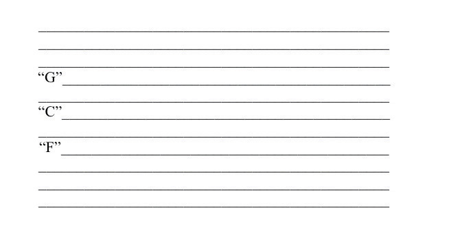Pitches were assigned specific names. The lowest pitch, called gamma, extended to the highest pitch, ut: the contraction of these two terms, gamut, has entered the language to mean “a complete range or scope.”
The eleven-line system is visually cumbersome. In early music specific lines were colored with different dyes, each line locating a specific pitch. All other pitches were held in relation to these. In time, the eleven-line staff was separated into two five-line staves. The remaining line between the two staves was not drawn, but was understood as being “shared” by each staff.
Specific symbols came into use, replacing the colored lines. Clefs (French-“key”) served the same purpose as colored lines, locating exact pitches around which all other pitches were calculated. These clefs represented general voice ranges and their names reflect this.
We label pitch-classes by the use of letter-names. Other labels are discussed in Section 2.2 "Chromatic Alteration: Accidentals". The Treble Clef (or “G-clef”), nominally indicating a high voice, locates the pitch “G” on the second line up on the staff.
The Bass Clef (or “F-clef”) locates the pitch “F” on the fourth line up on the staff. From these two fixed points, all other pitches were calculated and placed on the five-line staff. Figure 2.2 "Treble Clef and Staff; Bass Clef and Staff" shows the Treble and Bass Clefs and pitch placement on lines and spaces.
Figure 2.2 Treble Clef and Staff; Bass Clef and Staff

These two staves are combined into a systemA staff or collection of staves grouped together. It may also refer to one complete line of music. called The Grand StaffA system of two five-line staves used to locate and notate pitch. This evolved from the early eleven-line staff..In notation we call complete lines of music a system. This reflects its origins from the Guidonian staff: two five-line staves, slightly separated, the remaining invisible middle line shared by both. The Grand Staff now yields the potential for locating and notating all pitches, from lowest to highest.
Figure 2.3 The Grand Staff
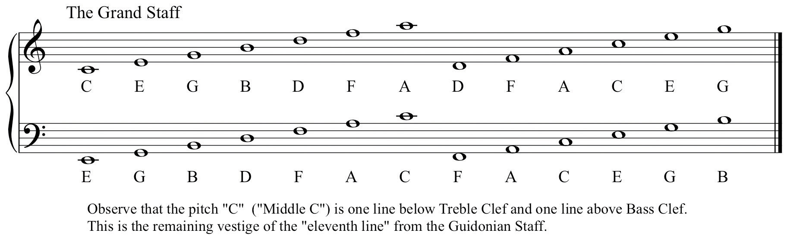In Figure 2.3 "The Grand Staff" pitches are listed just outside the boundaries of each clef on the Grand Staff. Since the two staves (Treble and Bass) are separated from one another in the Grand Staff, it is necessary to use symbols to extend each beyond its five-line boundaries.
Short horizontal dashes are used to extend the range of either staff, above or below. These dashes, called ledger linesLedger lines are small horizontal dashes above, below, or through a notehead used to extend the range of the staff., serve as truncated staff lines. They may occur above or below a notehead, or they may bisect a notehead.
Figure 2.4 Ledger Lines

The student should exercise particular care when drawing ledger lines. A common mistake of nascent music students is placing the ledger line on the wrong side of the notehead. When drawing notes observe several other properties:
Using these notational devices and practices, exact pitch placement can be shown. Note that the pitch that is one ledger line above Bass Clef is identical to the pitch that is one ledger line below Treble Clef (both are “Middle C”). This shared, connective pitch is reminiscent of the middle line from the Guidonian staff and serves to connect the two staves.
Figure 2.5 Pitch Placement on the Grand Staff

Observe the Grand Staff. Note that pitches of the same letter name occur throughout the system. Individual tones are specifically recognized as such. Pitches having the same letter name but separated by range are recognized as pitch-classes. Therefore the note one ledger line below the Treble Staff is designated as the pitch “C” (or “Middle C”), but all notes so labeled constitute the pitch-class “C.”
Also, observe that ledger lines extending notes below Treble Clef may be written in Bass Clef. Similarly, ledger lines extending notes above Bass Clef may be written in Treble Clef. At times, it is more appropriate to write pitches using ledger lines, rather than switching to another staff and clef. Exercise caution when writing or labeling pitches that cross over “between” the staves.
On the example provided, practice drawing Treble and Bass Clefs.
Figure 2.6 Clef Samples
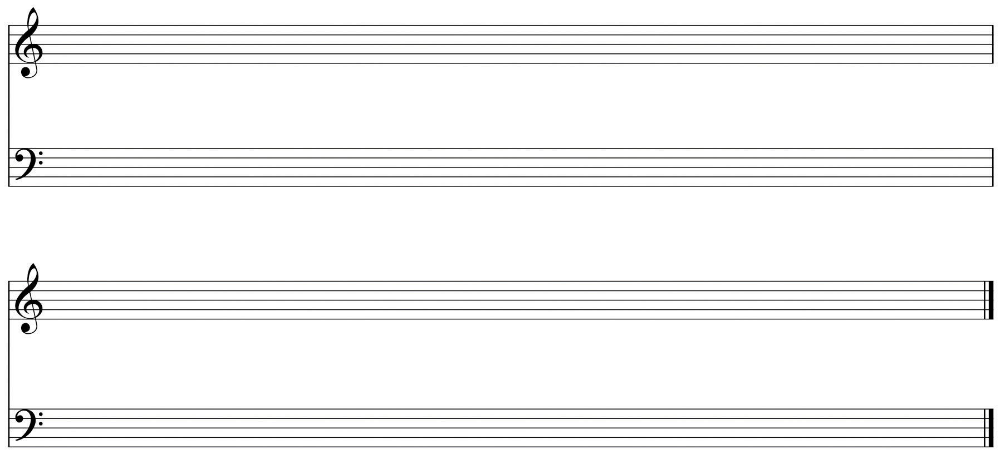On the example provided, practice drawing notes above and below the staves using ledger lines.
Figure 2.7 Ledger Lines Samples

The term diatonic denotes pitches that occur naturally in a theoretical system of music with respect to its components. A simplistic (and incorrect) view describes diatonic pitches as “the white notes” on the piano. The word chromatic comes from the Greek word for “color,” kromos. In early music, this term was employed to describe those pitches lying outside of the theoretical collection of pitches, pitches that were altered for various reasons. The term chromaticismChromaticism refers to those altered pitches that lie “outside” the range of a particular collection. will recur from time to time to describe altered pitches and their effects in music.
Early music made use of a fixed number of pitches organized into a system of overlapping six-tone sequences (hexachords). As compositional styles evolved and new resources added, composers routinely altered pitches for a variety of reasons. Sometimes a pitch was considered to sound too “hard” and was therefore “softened” (lowered). Sometimes pitches were altered (raised) to provide a more pronounced resolution to a following pitch. These altered pitches were called musica ficta (“contrived” or “feigned” music; “false” music). Originally the conditional use of these alterations was understood, therefore not notated. In time, the symbols representing an altered pitch were added above the note, almost as an editorial marking. Eventually these symbols were incorporated into the music, preceding the note they modified.
These symbols became what we call accidentalsAccidentals are those specialized symbols used to show chromatic alterations.. The need for these alterations came about because of our inherently flawed system of notating pitch: we have twelve pitches in our system yet only seven letter names. Accidentals accommodate these alterations. The “sharp” sign (the octothorpe or “pound” sign) raises a pitch, the “flat” sign (lower-case “b”) lowers a pitch. The natural sign cancels any other accidental. Double flats and double sharps may occur occasionally, their use determined by context.
Figure 2.8 Accidentals

Accidentals are always placed before the note that they modify, never behind. As a notational convenience, an accidental will stay in effect throughout the measure where it occurs. Any repetitions of that modified note within the measure remain modified. The note reverts to its diatonic form in subsequent measures.In much music of the modern era, accidentals only modify those notes that they immediately precede. If this is the case, it is so indicated in performance notes. Often however, as a reminder, composers will place a precautionary accidental before the note that was previously chromatically altered.
All pitches, but chromatic pitches especially, may be “spelled” in different ways. These differing spellings are context-dependent (or a matter of convenience) as will be discussed below. Notes that share the same pitch space but employ different spellings are said to be enharmonically equivalent. Enharmonic equivalenceEnharmonic equivalence describes pitches that share the same pitch-space (sound identical) but are “spelled” differently. is an attribute that will come to have greater significance as our argument progresses.
Figure 2.9 Enharmonic Equivalents

On the example provided, practice drawing notes with accidentals.
Figure 2.10 Accidental Samples
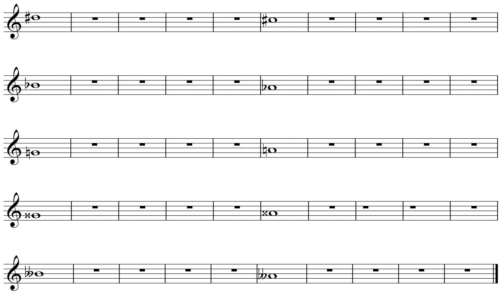On the example provided, draw the enharmonic equivalent for each note listed.
Figure 2.11 Enharmonic Equivalents

The keyboard serves as a visual reference for locating and identifying pitches. Observe Figure 2.12 "Small Keyboard Diagram" below. Notice the layout of the keyboard: there are two black keys grouped together, then three black keys grouped together. These visual reference points will help the familiarization process. Also observe the labels for the keys on the keyboard.
All musicians, regardless of discipline or instrument, should familiarize themselves with the keyboard. We are all visual learners to a greater or lesser extent. The visual layout of the keyboard will foster an understanding of pitch placement, register designation, scale construction, interval distance, chord construction-virtually every acquired skill in the study of music. The keyboard is a powerful and valuable tool.
In Figure 2.12 "Small Keyboard Diagram" observe that some white note pairs have an intervening black note and two pairs do not. Let us focus upon those two. Adjacent pitches are called semi-tones (or ”half steps”). The pitches E-F and B-C (the two white key pairs) are called diatonic half steps. Half steps that are measured from a white key to a black, or vice-versa, are called chromatic half steps.
The distance of a semi-tone or half step is the same for any two adjacent pitches across the keyboard. Figure 2.13 "Keyboard and Half Steps" shows this relationship in pitches.
Notes that are separated by an intervening note are called tones, or whole steps. Whole steps are formed by spanning the distance of two half steps. Figure 2.14 "Keyboard and Whole Steps" shows representative whole steps.
Figure 2.15 "Piano Keyboard" shows the entire piano keyboard. Each occurrence of the pitch-class “C” is labeled, as is the span from one C to the next. This visual reference will be helpful in understanding the following section.
On the keyboard diagram provided, label all pitches. Give enharmonic spellings for all black keys.
Figure 2.16 Keyboard
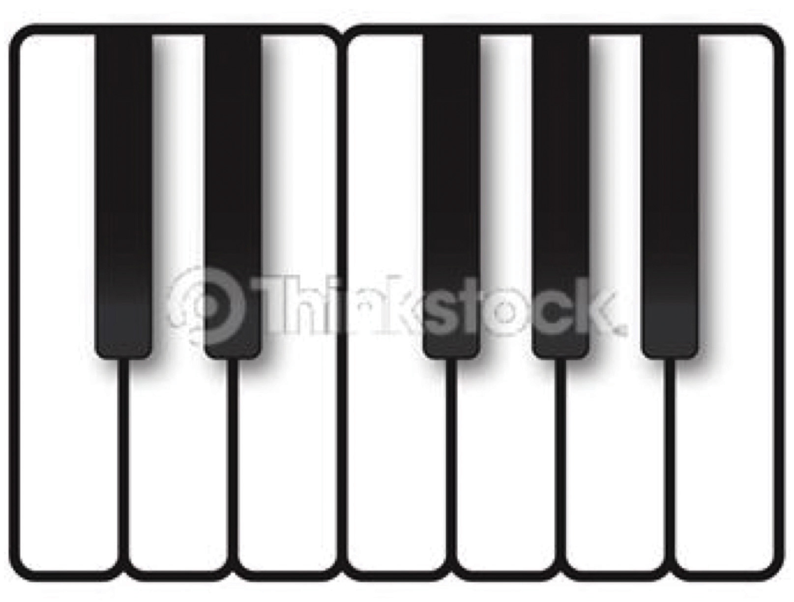As an Aural Skills drill, perform the following:
By using the Grand Staff, we can locate specific pitches from low to high. However it is necessary to assign more precise values to pitches according to their specific range in this spectrum. For this task we employ register designationsThe labeling system used to locate pitch based upon the piano keyboard..
To do this, we first separate the entire span of pitches into discrete segments labeled octaves (Italian: ottava “eight”). In this context, an octave is a segment of pitches spanning the distance from one pitch to its pitch-class counterpart above or below. Further, it is customary to speak of pitches as residing in some particular “octave.”
Figure 2.17 Octave

Using the octaveIn this context, an eight-tone species, or sequence of pitches. as a range-specific designator, pitches can be precisely located and identified by letter name as well as by register. Originally, a register designation system evolved that employed upper- and lower-case letter names. Multiple lower case letters (C, CC, CCC) denoted lower octaves while upper-case letter names followed by one or more apostrophes denoted higher octaves. While this system may still be encountered occasionally, it is gradually being abandoned in favor of a more malleable system.
In the 1970’s, the Acoustical Society of America instituted a register designation system based upon the layout of the piano keyboard. This system uses letter names to denote pitch. Each letter name is followed by a number denoting the octave within which that pitch resides. Each octave begins with the note “C” and extends to the “B” seven steps above.
There are three pitches below the lowest C (C1) on the average piano keyboard. These notes are labeled in two ways: A0, Bb0, B0, or simply A, Bb, B. So, the entire piano keyboard spans the range from A0 to C8. Figure 2.18 "Keyboard with Octave Designations" shows this entire keyboard with each octave designation labeled.
The use of register designations is coupled with, and reinforced by, the visual tool of the piano keyboard. This becomes an indispensable skill for every musician.
Often the range of a particular segment of music will be written in extremes of register, high or low. This is notated using multiple ledger lines. Often, as a notational convenience and to make for ease of reading, composers may employ symbols denoting that a passage is played an octave higher than written (8va-ottava), or an octave lower than written (8vb-ottava bassa). In order to avoid using ledger lines, the passage is written in a lower octave, then labeled above the staff if 8va, below the staff if 8vb. A bracket extends from the ottava symbol to the end of the passage that is raised or lowered.
Figure 2.19 8va, 8vb

At times composers will use the symbols 15ma and 15mb to denote that the passage is to be played two octaves higher or lower. While uncommon, this is occasionally used, especially as a notational convenience. A composer may indicate that a passage is to be performed two octaves higher or lower by including this as an instruction.
Figure 2.20 15ma
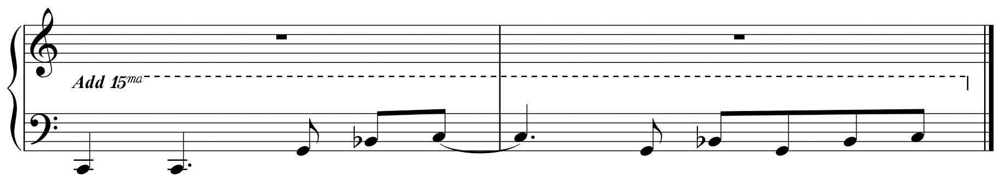On the keyboard diagram provided, label octave designations.
On the example provided:
Figure 2.22 8va, 8vb
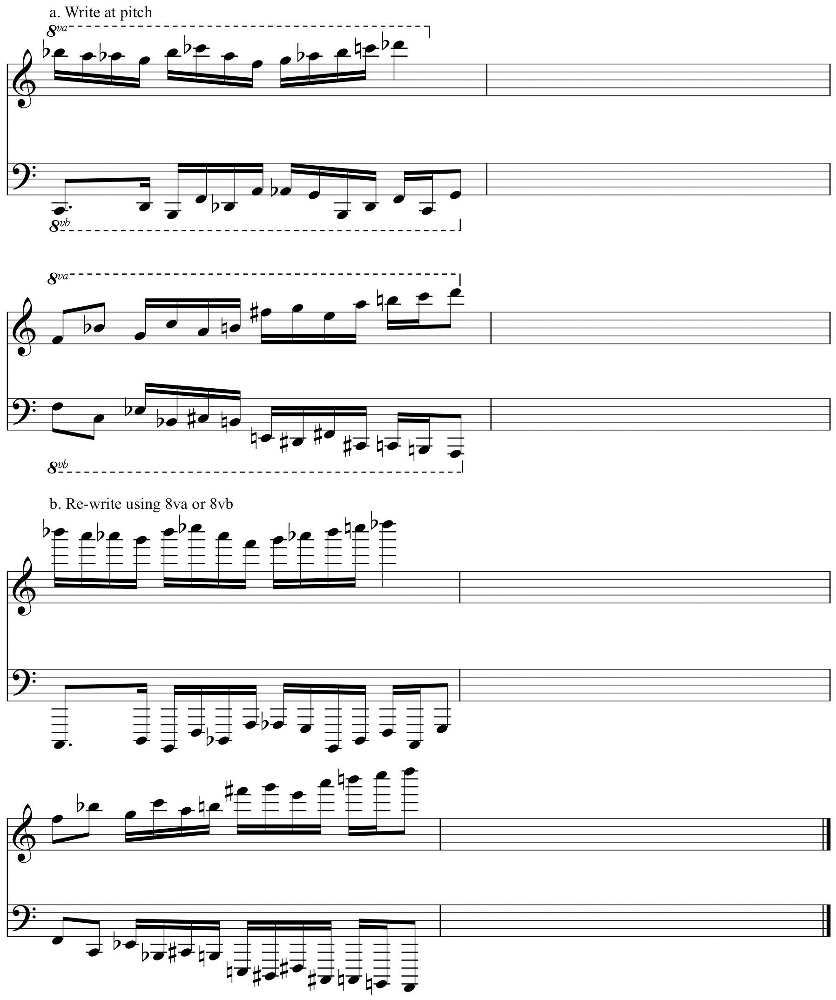In our system we label pitches using letter names. In other countries pitches are labeled using solfégeSyllables adapted to denote pitches. Originally used as a pedagogical mnemonic. syllables. This tradition originated as a pedagogical device invented by Guido. The syllables, originally Ut, Re, Mi, Fa, Sol, La, come from the initial syllable of each line of Ut queant laxis, an Ambrosian hymn to St. John the Baptist. Each line of music starts on a successively higher pitch. Guido employed this as a pedagogical tool for training singers.
Since Ut is the only syllable in the collection ending on a hard consonance, it was eventually replaced by the syllable Do (from Domine -Latin-“Lord”) to facilitate singing. In the 15th-century a seventh tone and syllable was added, Si, an acronym for Sancte Ioannes, the last two words from Ut queant laxis,. This became the syllable Ti in 19th-century English sol-fa.The inclusion of the syllable Ti is attributed to Sarah Glover. Ti was substituted for Si so that each solfége syllable would begin on a differing consonant. Thus we have solfége labels for pitches.
Figure 2.24 Ut queant laxis: Pitches and Syllables
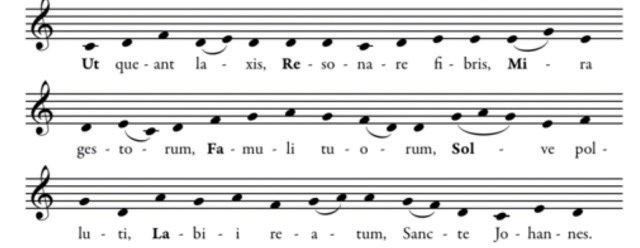Originally these syllables were fixed: each syllable referred to one specific pitch. “C” was always Do, regardless of context or chromatic alteration, “D” was always Re and so on. This fixed system is prevalent in those European countries, as well as among musicians trained in that tradition. A modified, moveable system of solfége has become prevalent in American music theory pedagogy. This will come into focus in Chapter 3 "The Foundations Scale-Steps and Scales".
One other notational convention has become commonplace in recent years. A caret is placed above a number, the caret denoting the words “scale degree.” This is adapted from the analytical symbolization of the reductive analysis techniques of the German-Austrian theorist Heinrich Schenker.
Figure 2.25 Scale Degree Numbers
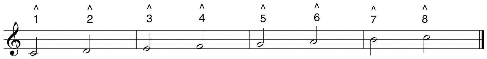As an Aural Skills drill:
(Sing in a comfortable register for now. Do not pronounce the “L” when singing Sol).
In discussing the evolution and formation of the staff, we saw that the eleven-line Guidonian staff separated into two five-line staves. The remaining line was not discarded as such, but rather served as a connective or “shared” line between the two staves.
This invisible middle line locates the pitch C4 (“Middle C”). On the grand staff this appears as a note one ledger line below the staff in Treble Clef, or a note one ledger line above the staff in Bass Clef.
Figure 2.26 C4 (“Middle C”) on the Grand Staff
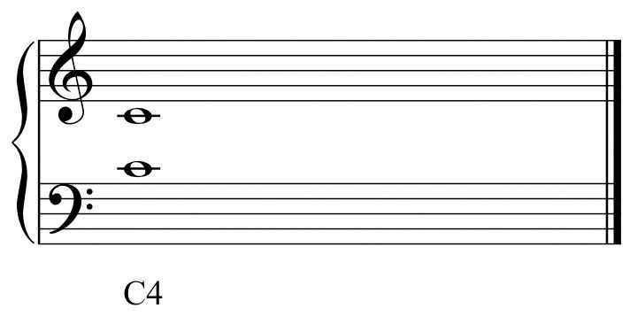From the Guidonian staff a separate clef evolved denoting this particular pitch. This clef is called ‘C-Clef,” or properly, “Moveable C-clefA clef derived from the eleven-line staff. This clef locates C4 regardless of what line of the staff it is placed upon..”
Figure 2.27 C4 C-Clef
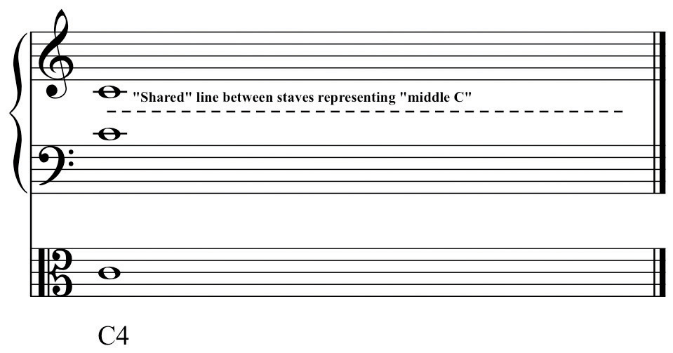This clef may occur on any line in the staff. Regardless of which line it occurs on, it always locates C4, “Middle C.” Originally, the use of this clef was concerned with particular voice ranges. The moveable C-Clef kept the majority of pitches of a given voice within the boundaries of the staff conforming to the typical range of that voice. Hence the common names for this clef as it occurs on each line reflect the associated voice part.
Figure 2.28 C-Clefs by Voice
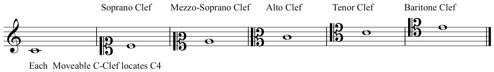The C-Clef on the lowest line of the staff is called Soprano Clef, the second line Mezzo-Soprano Clef, the third line Alto ClefThe C-clef placed on the second line of the staff. Used primarily for Viola., the fourth line Tenor ClefThe C-clef placed on the fourth line of the staff. Used for ‘Cello, Bassoon, and Trombone. and the top line Baritone Clef. Until the 19th Century (approximately) choral music was written in open score, each voice part on a separate staff with the appropriate clef. Gradually this became an arcane procedure.
Two of the Moveable C-Clefs have been retained in common use in instrumental writing, primarily because of the ranges of certain instruments. Alto Clef is predominantly used in writing for the Viola. If Treble or Bass Clefs were used, the Viola part would need to be written with a surfeit of ledger lines-it’s general range occupies the space “between” and “overlapping” Treble and Bass Clefs. The ‘Cello often employs Tenor Clef (in addition to Bass Clef). In orchestral and more advanced wind ensemble literature (but curiously, not in Jazz), Tenor Clef may be used for the upper register of the Trombone. Again, the purpose is to keep the majority of the pitches within the boundaries of the staff.
The remaining C-Clefs are not normally encountered except in autograph scores and facsimile editions of earlier music. There are several other clefs, one of which has become very common, the others rarely seen. In Choral writing, Tenor Clef is commonly replaced by a Treble Clef with an “8” (ottava) sign appended to the bottom of the clef.
As open score became less common, and as fewer musicians were trained to read Tenor Clef efficiently, this “compromise” clef came into general use. It reads exactly as Treble Clef but “sounds” down an octave, conforming to the range of the Tenor voice.
Figure 2.29 Octave Tenor Clef

Two clefs are no longer in use, French Violin Clef (locating G4) on the lowest line of the staff, and a Bass Clef (F-Clef) located on the middle line of the staff. This is called French Baritone Clef.
Figure 2.30 French Violin and French Baritone Clefs
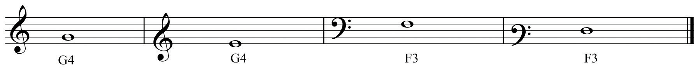The Neutral Clef is used for non-pitched percussion instruments.
Figure 2.31 The Neutral Clef
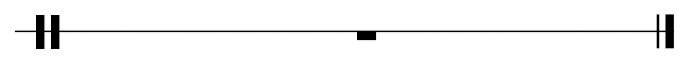Since Alto and Tenor Clefs have been retained in common usage, it is necessary to learn to read these with some facility. When first encountered, this can be a daunting task. Some say that familiarization and memorization is the only method for learning these clefs. There are expedient shortcuts however, that may help to facilitate the process:
For Alto Clef:
Figure 2.32 Alto Clef Shortcut
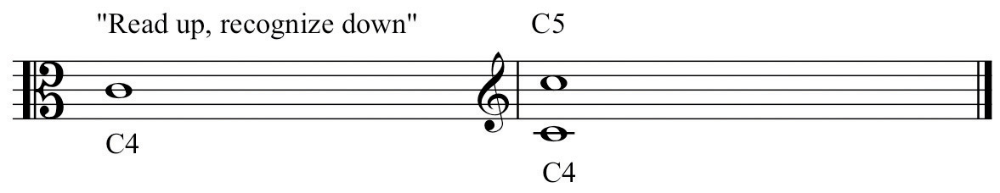For Tenor Clef:
Figure 2.33 Tenor Clef Shortcut

On the example provided, practice drawing Alto and Tenor Clefs.
Figure 2.34 Drawing Alto and Tenor Clefs
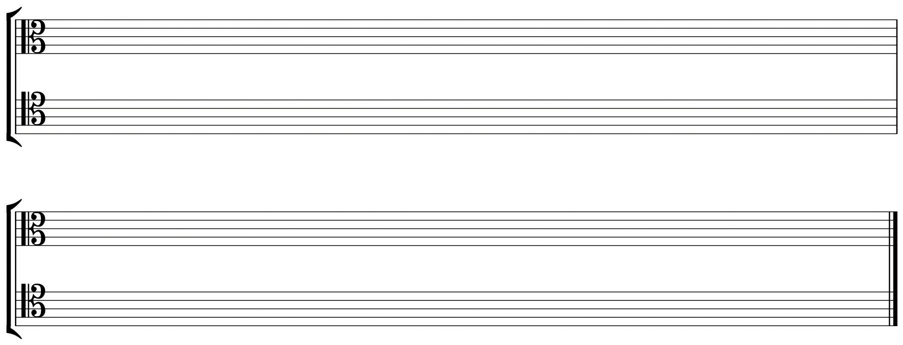For each example in Treble or Bass Clef, re-write in Alto or Tenor Clef as directed. Label pitches by letter name and by register designation.
Figure 2.35 Re-write to Alto and Tenor Clefs

Examples of Octave Tenor Clef are given. Re-write these in Tenor Clef.
Figure 2.36 Octave Tenor Clef to Tenor Clef
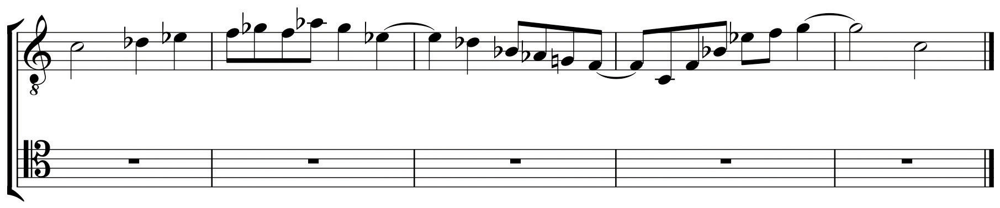This chapter acquaints the student with those notational devices and practices that identify and locate pitch precisely. The concept of generic pitch-class is also introduced as well as labeling conventions and solfége syllables.
This information and the subsequent attainment of fluent use by repetitive drill shall prepare the student to examine pitch and pitch structures in following chapters.